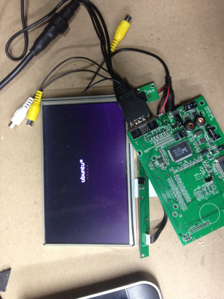
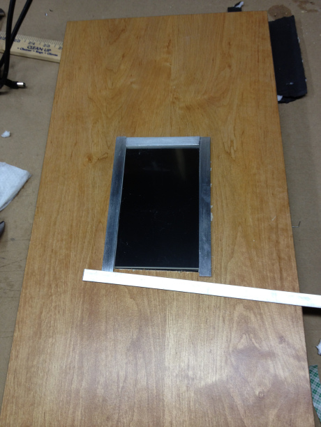
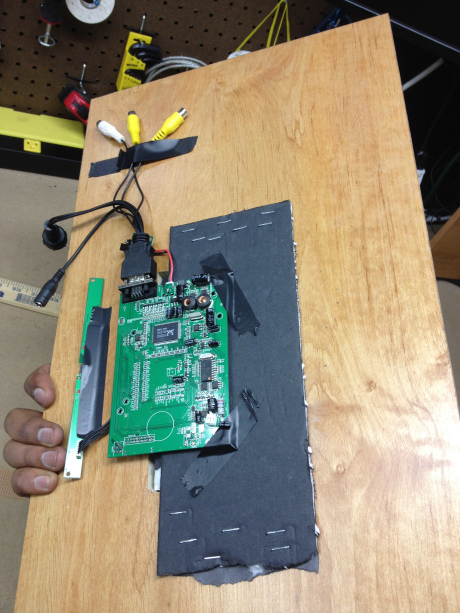
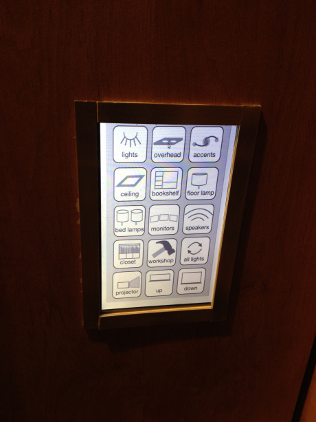

a custom touchscreen light switch
Silicon Valley is blessed with great weather and great electronics stores. A couple months ago, I found a touch screen monitor and touch screen driver for $45 in a warehouse of surplus electronics. It was a low-risk investment in an idea to attach a touch screen to the wall hook it up to my Jarvis light control system. To drive the monitor, I used a miniature Linux box by Zotac

They were relatively easy to hook up � I just slid the two ribbon cables from the touch screen into the slots on the driver. The driver takes a VGA input to display on the screen, and produces a USB output that relays touch coordinates to a computer.
After setting up the touch screen, I cut a rectangle into a wood panel for the touch screen to sit in. It may be easier to use a router for this, but I used a scroll saw to avoid chipping the wood. I didn�t take too many pictures during this step, but remembered to take one as I was finishing the front.

I used aluminum strips to make the frame around the screen. This could have been done in a much cleaner and elegant manner if I had some effective way to cut an aluminum sheet into a rectangular frame, but I didn�t. After finishing the frame, I attached the driver to the back of the wooden panel.
It�s not the most elegant construction, but a couple screws through the touch driver into the wood panel made it pretty solid. Finally, I installed the panel on the wall in my room.

I wrote a simple applet in Java that communicates with Jarvis over ssh. The current applet is the simplest possible implementation I could think of � I just created a JLabel with an image that fills the screen, then used a MouseListener with bounding boxes to convert mouse click coordinates into specific button presses. This just goes to show you that you can program a touch screen GUI in less than an hour if your implementation is simple enough.

Although this is a very niche implementation, it is possible to mimic this setup with a computer connected to an Arduino microcontroller that uses relays to switch lights on and off. I have already written about using relays to control things in a previous post, so this would just involve hooking up the Arduino to a computer and programming the GUI to send serial messages to it.
I still believe the most effective light switch is a good old mechanical one, but having a touch screen on the wall adds a nice touch (pun intended) to the room. It's a very affordable project, and can easily be customized to any lighting setup.